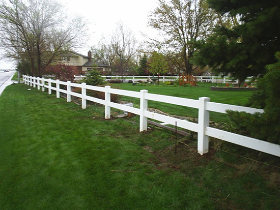
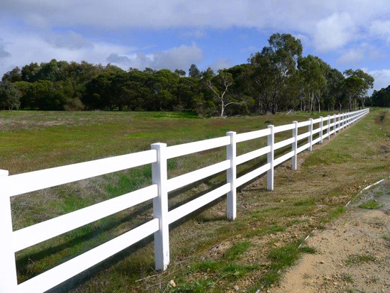
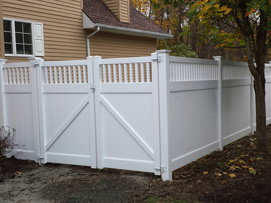
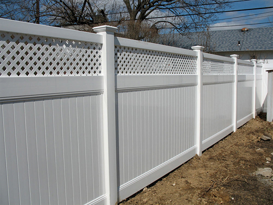
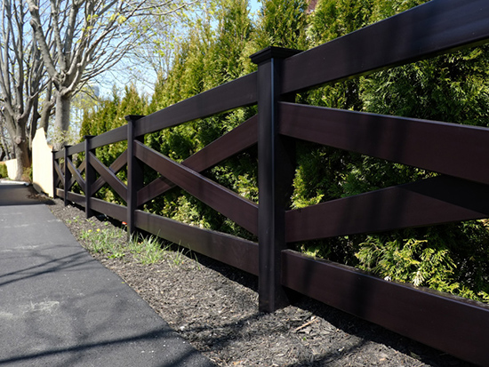
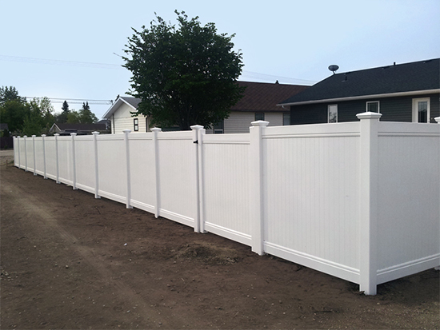
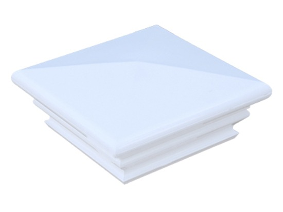

Our footprints are around the world. We provide quality products and services to customers from all over the world.
Read MoreHigh-end PVC Fence
For over 10 years we have supplied quality vinyl and PVC fencing to customers in the Czech Republic and across Europe. As a reliable distributor, we work with leading manufacturers and keep a wide range in stock, ensuring fast delivery and dependable availability. Dereroy offers all kinds of vinyl fences, profiles and accessories, as well as a range of creative PVC products.
We supply only proven fences made from premium PVC to ASTM standard with UV stabilisation. Every delivery is checked so customers always receive the correct, high-quality products.
We continually expand our range with new products and current trends, and we are happy to help you choose the right solution for your project.
Most of our sales team with more than 8 years of fence experience can ensure efficient and professional service to you.
High-end PVC Fence

This kind of Vinyl horse fence is durable and elegant. The standard small rail is 38x140mm, the heavy rail 50x150mm. Posts and rails are made of virgin PVC with UV protection.
See Details
This kind of PVC horse fence is durable and elegant. 5"x5" post with 2"x6" rail (2.2mm and 2.5mm wall thickness available).
See Details
Many homeowners prefer this look as the pickets at the top of a vinyl privacy fence break up the "solid" appearance while keeping privacy.
See Details
Spruce up your vinyl privacy fence by adding a lattice accent to the top. It's amazing what a little lattice can do for the look of a fence.
See Details
Dereroy Fencing Systems are low-maintenance vinyl, great for residential and commercial applications.
See Details
6ftx8ft Vinyl PVC privacy fence is the best selling privacy style fence. Vinyl classic privacy fence.
See DetailsCat: Vinyl Fence Caps & Brackets
For use with Dereroy 5-in x 5-in posts. Low maintenance, 100% virgin vinyl material, easy to install.
See Details
Cat: Vinyl Fence Caps & Brackets
Enhance your fencing with our post caps with architectural design. Decorative Federation post caps for 5"x5" posts.
See Details
Cat: Vinyl Fence Caps & Brackets
Dereroy supply the Gothic cap for post 5"X5" and 4"X4"; you can buy our caps separately or buy with the fence.
See Details
Cat: Vinyl Fence Caps & Brackets
For use with Dereroy 5-in x 5-in posts. Low maintenance, 100% virgin vinyl material, easy to install.
See Details
The open picket design of this privacy fence will make you the envy of your neighborhood. Constructed from lead-free vinyl.
See Details
Straight style, good-neighbor vinyl picket fence with 3" wide pickets. Available in heights of 36", 42" and 48".
See Details